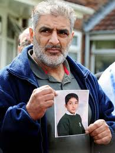

Intercessors, Pray and cry out for the United Kingdom.
James 2
V14) My brothers and sisters, what good is it if people say they have faith but do nothing to show it? Claiming to have faith can’t save anyone, can it?
V18) Someone might claim, “You have faith and I have action.” But how can I see your faith apart from your actions? Instead, I’ll show you my faith by putting it into practice in faithful action.
Acts 10 – Cornelius Calls for Peter
V1) A man named Cornelius lived in Caesarea. He was a Roman commander in the Italian Regiment.
V2) Cornelius and all his family were faithful and worshiped God. He gave freely to people who were in need. He prayed to God regularly.
V3) One day about three o'clock in the afternoon he had a vision. He saw an angel of God clearly. The angel came to him and said, "Cornelius!"
V4) Cornelius was afraid. He stared at the angel. "What is it, Lord?" he asked.
The angel answered, "Your prayers and gifts to poor people have come up like an offering to God. So he has remembered you."
Heroes during the UK riots.
Mr. Tariq Jahan
We salute you Mr. Tariq Jahan that right in the midst of intense and raw solemn grieving over the death of your beloved son, Haroon Jahan you spoke some stirring words to the nation.
Your words struck the heart of the nation.
The words of your aching heart penetrated the soul of those who were still rioting and tempered down racial and communal tensions.
You harboured no hatred or anger, with measured pace and dignity you said— “I lost my son, step forward if you want to lose your sons. Otherwise calm down and go home.”
The police have publicly credited Mr. Jahan for preventing further disorder in the city of Birmingham, United Kingdom.
To the family of the two brothers, Shazad Ali, 30, and Abdul Musavir, 31, who suffered fatal injuries, we offer our deepest heartfelt sympathy. No words can describe the torment you must be going through regarding the loss of your two sons. Hope our prayers will find some comfort.
Mr Tariq Jahan holding a photo of his late son.

{An elderly man came and put his arm around Ravi Zacharias when he was in Bombay, India, after speaking at a conference about the problem of evil. The man said, "Brother Ravi, I lost a daughter in an aircrash here some years ago. I have learnt something that I want to leave with you that time is not a healer, time is only a revealer of how God does the healing."}
Dr. F. A. Ravi Kumar Zacharias was born in India. Ravi has addressed theological issues pertaining to present day events all over the world. He has had the privilege to speak at Harvard, Princeton, and Oxford University.
He has given speeches at the White House, the Pentagon, and The Cannon House. He is presently Senior Research Fellow at Wycliffe Hall, Oxford University in Oxford, England.
Below: Father Simon Morris, the Assistant Curate of the Parish Church of St Mary the Virgin. Lansdowne Road, Tottenham
On Monday, 8th August 2011 he penned the following words for the whole world to read. (For the riots in London sadly made news headlines all over the world).
Dear Friends,
"This is to assure you all that Masses and other services will happen at both churches as normal.
At St. Mary's we are currently providing food and drink to people who have lost homes, who have had no electricity and who are working on the old Carpet Right building. (Burnt down on Saturday 6th August 2011) If people feel able to help, then please make your way to St. Mary's. I am very grateful to those who have kept this going since yesterday morning.
On Sunday 14th August, we will have a procession during the 10am Mass to make God's presence known on these streets that have seen such violence.
It was announced on 14th August 2011 that the Bishop of London has chosen the present Curate, Father Morris, (below) as the new Vicar for St Mary’s. Surely heroes need promotion! Congratulations.
The Bishop of Edmonton and Archdeacon of Hampstead will induct and collate him on Friday 30th September 2011 at 7-30 pm.

Father Rob Wickham. Photo Below.
When the riots first began in Hackney, East London, Father Wickham at 4 pm took the challenge and came out onto the streets wearing his dog collar and cassock. He was accompanied by the Bishop of Stepney, the very Reverend Adrian Newman, who was the former Dean of Rochester. They were praying through the riot areas and then a little later on in the evening they proceeded to Clarence Road where some serious rioting was taking place. The looting was just beginning at that point.
They saw a woman in her seventies who had collapsed on the street with a broken hip and the riot police had formed a little guard around her. People were continuing to throw rocks at the police even though there was a very injured woman just behind. The police said to Father Wickham and Bishop Adrian “Look, they’re not listening to us, can you go and ask them please to stop throwing things”. So they made their way from where that incident took place and walked up the street and spoke to any group of people of which there were many. They said “Look, it’s time to calm down a little bit. Let’s wait for the ambulance, and let the ambulance take this woman away”. So they stopped throwing stones to let the ambulance in and the police disappeared. And then it was back to the looting and it just carried on and Father Wickham stayed bravely, praying on the streets till about midnight.

Anton Nicholas preaching in Malaysia.
Do watch the video and we pray that the Presence of Jesus will touch you personally.
We want to acknowledge our Lord's blessings on this website. It was blessed and inaugurated officially on 1 August 2002.
Flag Counter
The counter below was introduced for the first time on 8th January 2014. Sadly the firm who installed my previous beautiful counter many years ago, and filled it with exciting statistics, suddenly went out of business. As a result we lost all our treasured statistics.
We like national flags portraying on our website so we are re-introducing the flag counter freshly again through another firm. It is so exciting to see visitors coming from the far corners of the earth!